<div class="main-bg-pg">
    <div class="container">
      <div class="row">
        <section class="main col-12">
          <div class="pg-border">
            <div class="box">
              <h1 class="title">Головні персонажи</h1>
  
              <div class="box-main">
                <hr class="main-line" />
                <h3 class="main-name">Кассандра</h3>
                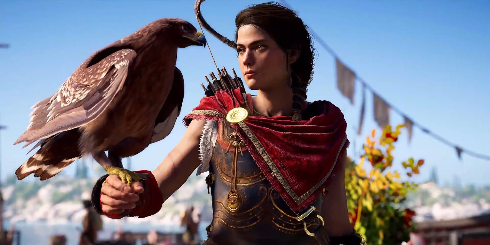
                <p class="text">
                  <i>Кассандра</i>, також відома як <i> Місті</i> і
                  <i>Господиня Орла</i> - найманка, нащадок царя Леоніда,
                  канонічний головний герой Assassin's Creed: Odyssey.
                </p>
  
                <p class="text">
                  Старша дитина в сім'ї спартанського полководця Ніколаос і його
                  дружини Миррине. Згідно спартанським традиціям, Кассандра з
                  дитинства навчалася поводження зі зброєю і битися, в чому їй
                  допомагав батько, а отримала добру освіту, завдяки матері. Від
                  неї ж вона отримала спис свого діда, царя Леоніда. Одного разу
                  її де йствія привели до загибелі жерця, через що її батько був
                  змушений скинути її з гори Тайгон. Довгі роки вона вважалася
                  мертвою, хоча вона вижила і покинула Спарту.
                </p>
  
                <p class="text">
                  Дівчинку винесло біля берегів Кефальскіх островів, де її
                  прихистив скупник Маркос. І хоча він часто її використовував,
                  він піклувався і Кассандра цінувала його і вважала другом.
                  Подорослішавши, вона стала відомою наемніцей на островах, але
                  там їй не вистачало пригод і вона постійно шукала спосіб
                  покинути Кефалінія і відправитися на пошуки пригод.
                </p>
  
                <p class="text">
                  Багато в чому Кассандра зобов'язана своєму орлу Икару, який
                  супроводжує її з самого дитинства. Прізвисько "Господиня орла"
                  отримала якраз через неймовірно злагодженою роботою між ними.
                </p>
              </div>
  
              <div class="box-main">
                <hr class="main-line" />
                <h3 class="main-name">Алексіос</h3>
                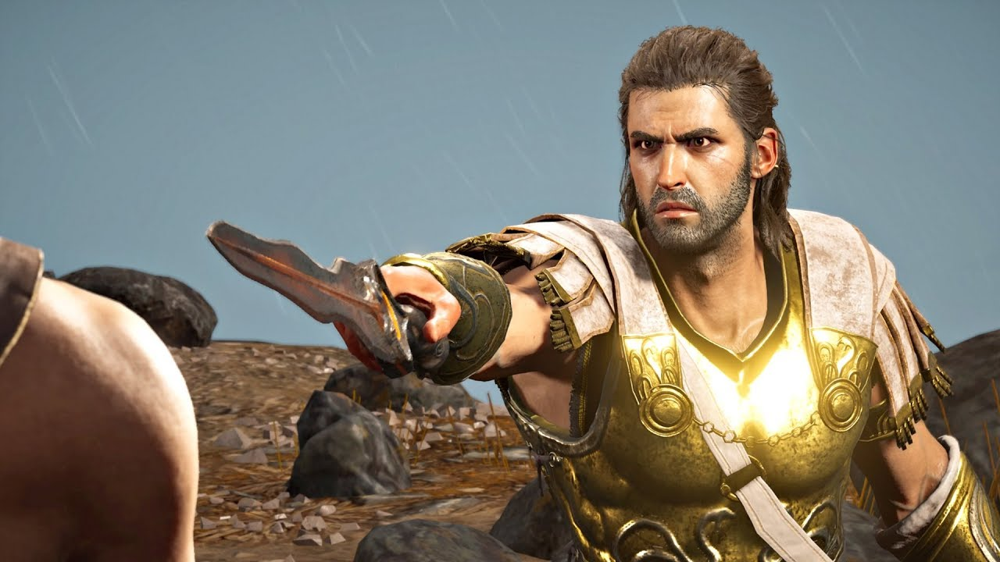
                <p class="text">
                  <i>Алексіос</i> , пізніше <i>Деймос </i>- молодший брат
                  Кассандри, член і знаряддя Культу Косм оса.
                </p>
  
                <p class="text">
                  Ще немовлям був обре чен на смерть, після чого його захопив
                  Культ Космосу. Вони з дитинства підживлювали в ньому злість і
                  гнів, через що Алексіос став неймовірно жорстоким. Пізніше він
                  був обраний "лідером" Культу, проте більшу частину часу він
                  проводить в боях і поїздках, так що фактично він нічого не
                  вирішував.
                </p>
  
                <p class="text">
                  Гравець може вибрати Алексіос як протагоніста, тоді біографії
                  його і Кассандри міняються місцями
                </p>
              </div>
  
              <div class="box-main">
                <hr class="main-line" />
                <h3 class="main-name">Міррін</h3>
                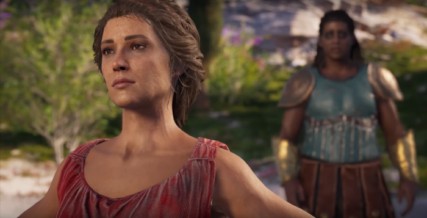
                <p class="text">
                  <i>Міррін</i>, також відома як <i> Фенікс </i> і
                  <i>Господиня Орла</i> - мати Кассандри і Алексіос, дочка царя
                  Леоніда, пізніше правитель Наксоса.
                </p>
  
                <p class="text">
                  Горда представниця спартанського народу, яка шанує традиції
                  предків навіть через багато років після втечі з батьківщини.
                  Виховувалася згідно з усіма спартанським традиціям, завдяки чому
                  є розумною і сильною жінкою, здатної розібратися в будь-якій
                  ситуації. Виховуючи Кассандру усіма силами намагалася прищепити
                  дочки мудрість і кмітливість.
                </p>
  
                <p class="text">
                  Була присутня на горі Тайгон, коли Оракул засудив Алексіос до
                  смерті. І хоча вона всіляко протестувала і намагалася
                  перешкодити, вона виявилася безсила і страта відбулася. Після
                  цього втекла з Спарти, і через роки реабілітації та пошуків себе
                  змогла стати правителькою острова Наксос.
                </p>
              </div>
  
              <div class="box-main">
                <hr class="main-line" />
                <h3 class="main-name">Ніколаос</h3>
                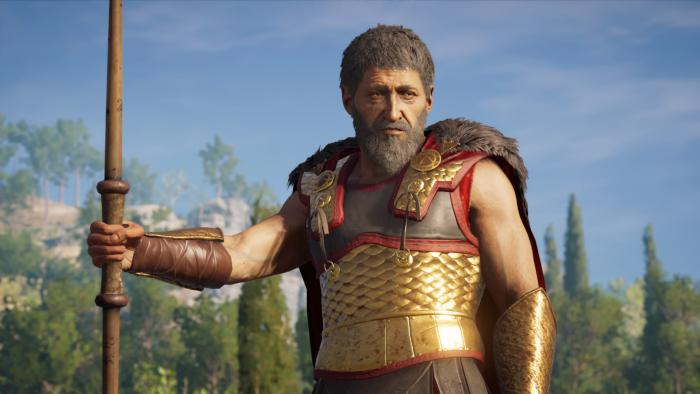
                <p class="text">
                  <i>Ніколаос</i>, також відома як <i> Вовк з Спарти </i> і
                  <i>Господиня Орла</i> - спартанський полководець, батько
                  Кассандри, Алексіос, Стентора.
                </p>
  
                <p class="text">
                  Вірний спартанським звичаям і законам, Ніколаос виховував дітей
                  Миррине саме так, незважаючи на любов і турботу до них. Тренуючи
                  Кассандру він прагнув проявити в ній ті ж якості, що були у її
                  діда, царя Леоніда. Однак все обернулося інакше, коли Оракул
                  засудив Алексіос до смерті. Хоча Ніколаос всіляко опирався і
                  намагався оскаржити вирок, йому все ж довелося підкоритися
                  законам Спарти.
                </p>
  
                <p class="text">
                  Через роки він взяв до себе в вихованці Стентора, і пізніше
                  назвав його сином. Його він навчав військової справи, щоб
                  коли-небудь він зміг стати таким же відомим спартанським
                  полководцем.
                </p>
              </div>
  
              <div class="box-main">
                <hr class="main-line" />
                <h3 class="main-name">Стентор</h3>
                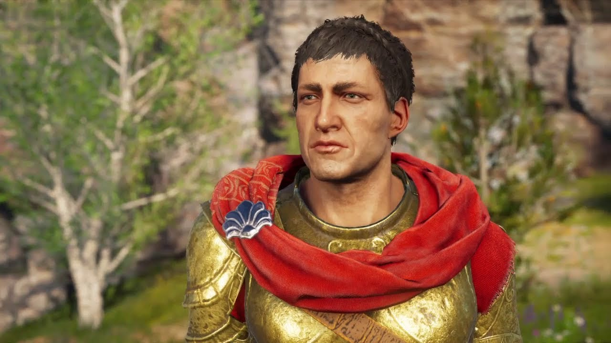
                <p class="text">
                  <i>Стентор</i> - спартанський офіцер, зведений брат Кассандри і
                  Алексіос.
                </p>
  
                <p class="text">
                  Сирота, якого в дитинстві усиновив Ніколаос, спартанський
                  полководець. Новий батько виховував його як свого наступника -
                  всіляко навчав військової справи, тактиці, вчив вести бій.
                  Незважаючи на складний і озлоблений характер, Стентор виявляв до
                  батька виключно повагу і шану.
                </p>
              </div>
  
              <div class="box-main">
                <hr class="main-line" />
                <h3 class="main-name">Варнава</h3>
                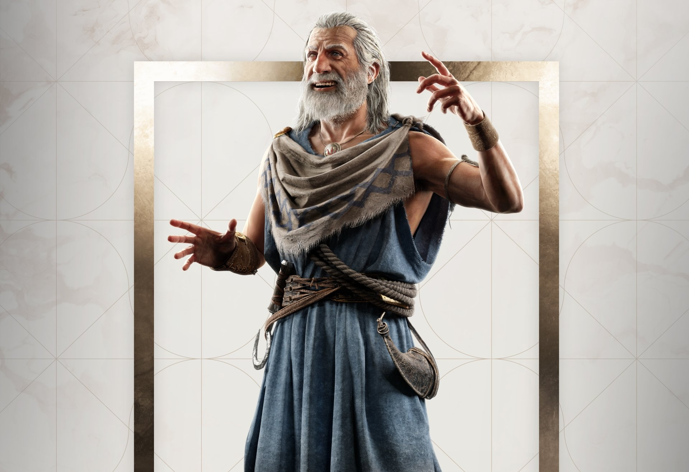
                <p class="text">
                  <i>Варнава</i> - ветеран Пелопоннесских воєн, штурман на кораблі
                  Адрестія, вірний союзник Кассандри.
                </p>
  
                <p class="text">
                  Народився на островах Міконосу. В юності служив в армії, але
                  пізніше пішов звідти і зайнявся приватними перевезеннями на
                  кораблі. Пізніше став капітаном корабля Адрестія. Одного разу
                  потрапив в халепу з бандитом на прізвисько Циклоп, від якого
                  його врятувала Кассандра. На знак подяки він запропонував їй
                  корабель і посаду капітана, а сам став допомагати їй в якості
                  штурмана.
                </p>
              </div>
  
              <div class="box-main">
                <hr class="main-line" />
                <h3 class="main-name">Феба</h3>
                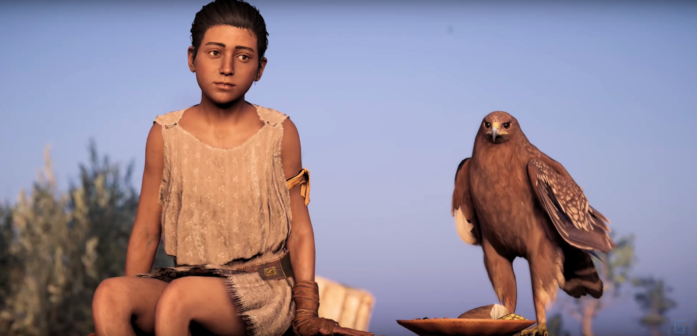
                <p class="text">
                  <i>Феба</i> - дівчинка-сирота з Кефалійскіх островів. Краща
                  подруга Кассандри.
                </p>
  
                <p class="text">
                  Як і багато безпритульні, Феба прислуговує багатим і впливовим
                  людям. На Кефалінії її покровителем є нешкідливий підприємець
                  Маркос, один Кассандри, який і познайомив їх. І хоча Маркос
                  ніколи не вимагав від дівчинки лізти в кримінал, Феба, будучи
                  розумною і кмітливою, сама знаходила потрібну інформацію,
                  завдяки чому Маркос міг підсилювати своє становище. Пізніше,
                  коли Кассандра покинула Кефалінія, Феба вирушила до Афін, де її
                  таланти дуже сильно стали в нагоді в роботі на Аспасію, дружину
                  Перикла.
                </p>
              </div>
  
              <div class="box-main">
                <hr class="main-line" />
                <h3 class="main-name">Сократ</h3>
                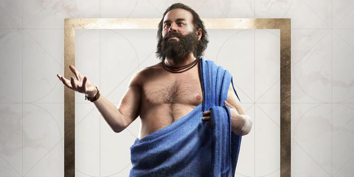
                <p class="text">
                  <i>Сократ</i> - філософ, вчення якого знаменує поворот у
                  філософії. Друг і союзник Кассандри.
                </p>
  
                <p class="text">
                  Вперше зустрічається в Афінах, і відразу ж зав'язує з Кассандрою
                  філософську розмову, чому не слабо її розлютив. Проте, пізніше
                  Кассандра стала охочіше вступати в такі розмови, і приймає їх як
                  виклик. Все це вилилося у своєрідну дружбу, завдяки чому Сократ
                  став вірним союзником Місті, і багато в чому допомагав їй, а
                  також давав можливості пізнати себе в більшій мірі.
                </p>
              </div>
  
              <div class="box-main">
                <hr class="main-line" />
                <h3 class="main-name">Алківіад</h3>
                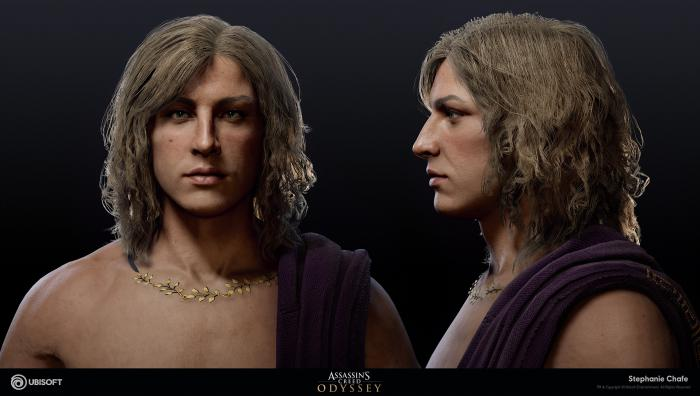
                <p class="text">
                  <i>Алківіад</i> - давньогрецький афінський державний діяч і
                  оратор, близький друг Кассандри.
                </p>
  
                <p class="text">
                  Вперше зустрічається на прийомі у Перикла, на своїй черговій
                  оргії. Але незважаючи на це ставати союзником і другом
                  Кассандри. І хоча він часто маніпулює, недоговорює, а іноді все
                  дуже сильно перекручує, ставить перед собою виключно благі цілі,
                  нехай і з дивними доповненнями.
                </p>
              </div>
  
              <div class="box-main">
                <hr class="main-line" />
                <h3 class="main-name">Гіппократ</h3>
                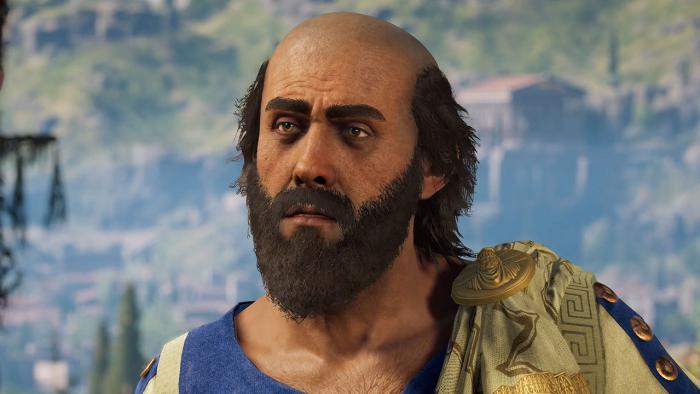
                <p class="text">
                  <i>Гіппократ</i> - талановитий лікар, основоположник медицини,
                  союзник Кассандри.
                </p>
  
                <p class="text">
                  Вперше зустрічається в своїй клініки, де його діяльності
                  заважають жерці Гери, які звинувачують його в непокорі богам. І
                  хоча сам Гіппократ не рад йти проти волі богів, вважає своїм
                  допомагати людям будь-яку ціну. Цьому допомагають його риси
                  характеру - неупередженість, впертість і доброта. Пізніше,
                  піддаючи загрозі своє життя, допомагав Кассандру в боротьбі з
                  Культом Космосу, зокрема боровся з епідемією чуми в Афінах.
                </p>
              </div>
  
              <div class="box-main">
                <hr class="main-line" />
                <h3 class="main-name">Брасид</h3>
                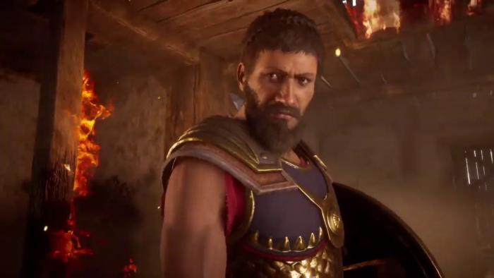
                <p class="text">
                  <i>Брасид</i> - спартанський офіцер. Залежно від дій гравця,
                  один або суперник Кассандри.
                </p>
  
                <p class="text">
                  Незважаючи на приналежність до спартанських воїнів, Брасид
                  вважає за краще діяти спочатку розумом, а потім списом. Завжди
                  пропонує Кассандру розумні і одночасно мирні вирішення певних
                  ситуацій, завдяки чому може заслужити її розташування. Але
                  незважаючи на це, є дуже вмілим і витривалим воїном, який
                  пережив не одне бій.
                </p>
              </div>
  
              <div class="box-main">
                <hr class="main-line" />
                <h3 class="main-name">Клеон</h3>
                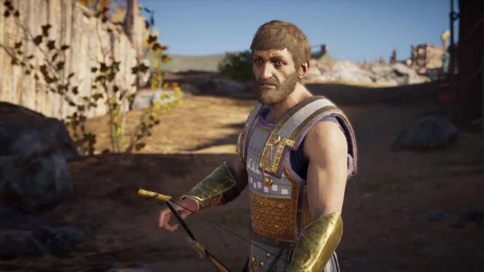
                <p class="text">
                  <i>Клеон </i> - афінський полководець, член Культу Космосу.
                  Головний антагоніст гри.
                </p>
  
                <p class="text">
                  Войовнича вдача відрізняє його від багатьох афінян. Часто
                  заперечує рішення Перикла, правителя Афін, звинувачуючи його в
                  м'якості і бездіяльності. Проте, Клеон є посереднім воїном, і
                  тримається битв в стороні. Через це переважно використовує
                  цибулю в битві, нехай і не використовуючи його часто.
                </p>
              </div>
  
              <div class="box-main">
                <hr class="main-line" />
                <h3 class="main-name">Аспасія</h3>
                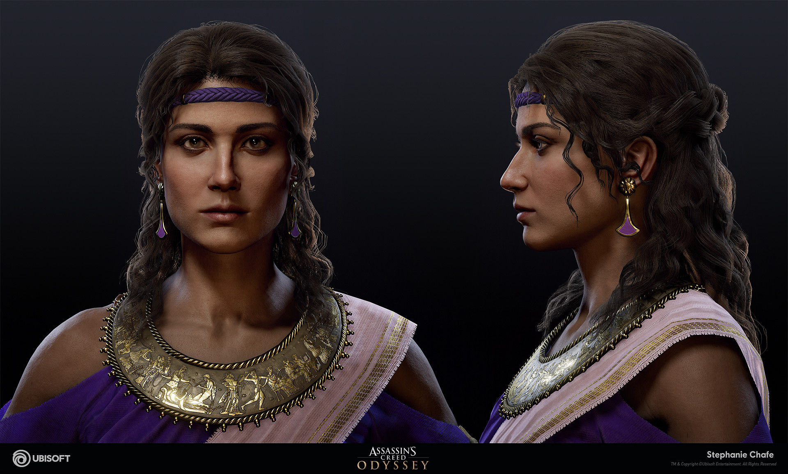
                <p class="text">
                  <i>Аспасія</i> - колишня гетера, а нині дружина Перикла, ватажка
                  Афін, пізніше Кассандра дізнається що Аспасія є Примарою Космосу
                  (глава Культу Космосу).
                </p>
  
                <p class="text">
                  Відрізняється рідкісним поєднанням розуму, краси і освіченості.
                  І хоча лідером Афін вважається Перікл, він так часто
                  прислухається до порад своєї коханої, що вона може вважатися
                  повноправним лідером держави. Вважає за краще триматися від
                  військової справи і політики, зосередивши свою увагу на
                  соціальній активності та спілкування з жітелямі.В кінці сюжетної
                  гілки "з тіні" у Кассандри з'являється вибір вбити чи пошанувати
                  Аспасію за створення Культу Космосу
                </p>
              </div>
              
            </div>
          </div>
        </section>
      </div>
    </div>
  </div>
  